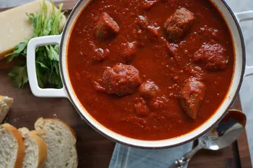

Italian Sunday Soup
Return Home

Description
Start this sauce on Sunday morning and fill your kitchen with amazing aromas that will have your family asking when dinner's going to be ready! It's full of rich,
sweet tomato flavor, subtle herbs, and savory, tender meat that's cooked right in the sauce. Ladle it over your favorite pasta and serve with buttery garlic bread.
Ingredients
- 2 tablespoons olive oil
- 1 large onion, chopped
- 2 carrots, chopped
- 2 celery stalks, chopped
- 4 garlic cloves, minced
- 1 pound ground beef
- 1 pound ground pork
- 1/2 cup dry red wine (optional)
- 2 (28-ounce) cans crushed tomatoes
- 1 (15-ounce) can tomato sauce
- 1 (6-ounce) can tomato paste
- 1 cup beef broth or water
- 2 teaspoons sugar
- 1 teaspoon dried basil
- 1 teaspoon dried oregano
- 1/2 teaspoon dried thyme
- 1/2 teaspoon red pepper flakes (optional)
- Salt and freshly ground black pepper, to taste
- Fresh basil or parsley, for garnish (optional)
- Grated Parmesan cheese, for serving (optional)
Steps
- Heat the olive oil in a large pot or Dutch oven over medium heat. Add the chopped onion, carrots, and celery. Cook, stirring occasionally, until the vegetables are softened, about 5-7 minutes.
- Add the minced garlic and cook for another 1-2 minutes until fragrant.
- Add the ground beef and ground pork to the pot. Cook, breaking up the meat with a spoon, until browned and cooked through, about 8-10 minutes. Drain any excess fat if necessary.
- If using, pour in the red wine to deglaze the pot, scraping up any browned bits from the bottom. Let it simmer for about 5 minutes until the wine is reduced by half.
- Add the crushed tomatoes, tomato sauce, tomato paste, and beef broth (or water) to the pot. Stir to combine.
- Add the sugar, dried basil, dried oregano, dried thyme, and red pepper flakes (if using). Season with salt and freshly ground black pepper to taste.
- Bring the sauce to a boil, then reduce the heat to low. Cover and let it simmer gently for at least 2 hours, stirring occasionally. The longer it simmers, the better the flavors will meld together.
- Before serving, taste and adjust seasoning if needed. If the sauce is too thick, you can add a bit more beef broth or water to reach your desired consistency.
- Serve the sauce over your favorite pasta and garnish with fresh basil or parsley and grated Parmesan cheese if desired.
- Enjoy your delicious Italian Sunday Soup!